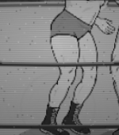

Geometry every frame; trunks masks every third frame. Idle for the rig and facing passes every threshold. G1b numbers are re-measured with this page's definitions.
| measure | G1b | new | |||||
|---|---|---|---|---|---|---|---|
| Lou (attacker), lou-george, facing right | |||||||
| knee line (px, >= -0.5) | -9.528 drive f43 near | 1.765 engage f0 near | |||||
| ankle stagger (px, >= 20) | 0.28 break f96 | 26.98 drive f44 | |||||
| knee stagger (px, >= 14) | 6.13 drive f44 | 27.49 engage f0 | |||||
| planted sole vs idle (px, <= 1.5) | 7.04 drive f44 near | 1.91 drive f82 near | |||||
| trunks share vs idle (points, <= 10) | 3.16 break f102 | 2.95 drive f78 | |||||
| hip angle step (rad/frame) | 0.087 break f88 near | 0.087 break f88 near | |||||
| knee line step (px/frame) | 0.619 engage f9 near | 0.916 engage f8 far | |||||
| George (defender), lou-george, facing right | |||||||
| knee line (px, >= -0.5) | -8.583 even f17 near | 2.287 engage f0 far | |||||
| ankle stagger (px, >= 20) | 15.18 even f17 | 20.76 drive f62 | |||||
| knee stagger (px, >= 14) | 17.28 drive f62 | 24.2 engage f0 | |||||
| planted sole vs idle (px, <= 1.5) | 2.4 even f31 far | 0.63 engage f8 far | |||||
| trunks share vs idle (points, <= 10) | 1.86 drive f72 | 1.91 drive f78 | |||||
| hip angle step (rad/frame) | 0.173 break f88 far | 0.171 break f88 far | |||||
| knee line step (px/frame) | 0.714 engage f8 near | 1.041 engage f8 far | |||||
| Lou (attacker), lou-george, facing left | |||||||
| knee line (px, >= -0.5) | -9.528 drive f43 near | 1.765 engage f0 near | |||||
| ankle stagger (px, >= 20) | 0.28 break f96 | 26.98 drive f44 | |||||
| knee stagger (px, >= 14) | 6.13 drive f44 | 27.49 engage f0 | |||||
| planted sole vs idle (px, <= 1.5) | 7.04 drive f44 near | 1.91 drive f82 near | |||||
| trunks share vs idle (points, <= 10) | 3.16 break f102 | 2.95 drive f78 | |||||
| hip angle step (rad/frame) | 0.087 break f88 near | 0.087 break f88 near | |||||
| knee line step (px/frame) | 0.619 engage f9 near | 0.916 engage f8 far | |||||
| George (defender), lou-george, facing left | |||||||
| knee line (px, >= -0.5) | -8.583 even f17 near | 2.287 engage f0 far | |||||
| ankle stagger (px, >= 20) | 15.18 even f17 | 20.76 drive f62 | |||||
| knee stagger (px, >= 14) | 17.28 drive f62 | 24.2 engage f0 | |||||
| planted sole vs idle (px, <= 1.5) | 2.4 even f31 far | 0.63 engage f8 far | |||||
| trunks share vs idle (points, <= 10) | 1.86 drive f72 | 1.91 drive f78 | |||||
| hip angle step (rad/frame) | 0.173 break f88 far | 0.171 break f88 far | |||||
| knee line step (px/frame) | 0.714 engage f8 near | 1.041 engage f8 far | |||||
| George (attacker), george-lou, facing right | |||||||
| knee line (px, >= -0.5) | -10.998 drive f43 near | 7.464 even f17 near | |||||
| ankle stagger (px, >= 20) | 0.04 drive f58 | 20.8 drive f44 | |||||
| knee stagger (px, >= 14) | 6.15 drive f44 | 24.92 drive f44 | |||||
| planted sole vs idle (px, <= 1.5) | 5.6 drive f82 far | 0.85 drive f44 far | |||||
| trunks share vs idle (points, <= 10) | 3.39 break f96 | 1.44 break f96 | |||||
| hip angle step (rad/frame) | 0.087 break f88 near | 0.087 break f88 near | |||||
| knee line step (px/frame) | 0.714 engage f8 near | 0.501 engage f8 far | |||||
| Lou (defender), george-lou, facing right | |||||||
| knee line (px, >= -0.5) | -7.44 even f17 near | 4.689 drive f43 near | |||||
| ankle stagger (px, >= 20) | 18.42 even f17 | 27.01 drive f62 | |||||
| knee stagger (px, >= 14) | 19.31 drive f62 | 29.45 drive f62 | |||||
| planted sole vs idle (px, <= 1.5) | 5.53 engage f0 far | 1.14 even f31 near | |||||
| trunks share vs idle (points, <= 10) | 12.27 break f102 | 5.86 break f102 | |||||
| hip angle step (rad/frame) | 0.174 break f88 far | 0.168 break f88 far | |||||
| knee line step (px/frame) | 0.619 engage f9 near | 0.447 engage f8 far | |||||
| George (attacker), george-lou, facing left | |||||||
| knee line (px, >= -0.5) | -10.998 drive f43 near | 7.464 even f17 near | |||||
| ankle stagger (px, >= 20) | 0.04 drive f58 | 20.8 drive f44 | |||||
| knee stagger (px, >= 14) | 6.15 drive f44 | 24.92 drive f44 | |||||
| planted sole vs idle (px, <= 1.5) | 5.6 drive f82 far | 0.85 drive f44 far | |||||
| trunks share vs idle (points, <= 10) | 3.39 break f96 | 1.44 break f96 | |||||
| hip angle step (rad/frame) | 0.087 break f88 near | 0.087 break f88 near | |||||
| knee line step (px/frame) | 0.714 engage f8 near | 0.501 engage f8 far | |||||
| Lou (defender), george-lou, facing left | |||||||
| knee line (px, >= -0.5) | -7.44 even f17 near | 4.689 drive f43 near | |||||
| ankle stagger (px, >= 20) | 18.42 even f17 | 27.01 drive f62 | |||||
| knee stagger (px, >= 14) | 19.31 drive f62 | 29.45 drive f62 | |||||
| planted sole vs idle (px, <= 1.5) | 5.53 engage f0 far | 1.14 even f31 near | |||||
| trunks share vs idle (points, <= 10) | 12.27 break f102 | 5.86 break f102 | |||||
| hip angle step (rad/frame) | 0.174 break f88 far | 0.168 break f88 far | |||||
| knee line step (px/frame) | 0.619 engage f9 near | 0.447 engage f8 far | |||||
{
"commit": "c8ab31b",
"dirty": true,
"branch": "story/marigold-opening",
"baseline": "baseline-g1b-eb2485f.json",
"g1bStrips": "g1b/frames (ea8c542 film, same stance as the baseline)",
"rigs": "thesz-procreate-v1 (Lou), george-roster-v1 (George)",
"flags": "grapples=v1 only",
"seed": 11,
"constants": {
"LOCKUP_POSES": {
"even": {
"bend": 0.38,
"crouch": 0.24,
"lead": -0.2,
"leadShin": -0.1,
"rear": 0.1,
"rearShin": -0.4
},
"attacker": {
"bend": 0.38,
"crouch": 0.32,
"lead": -0.25,
"leadShin": -0.1,
"rear": 0.05,
"rearShin": -0.4
},
"defender": {
"bend": 0.38,
"crouch": 0.14,
"lead": -0.15,
"leadShin": -0.1,
"rear": 0.15,
"rearShin": -0.4
}
},
"legGain": 1.086,
"holdGap": 80,
"engageEnd": 0.3,
"timeout": 1.4
}
}